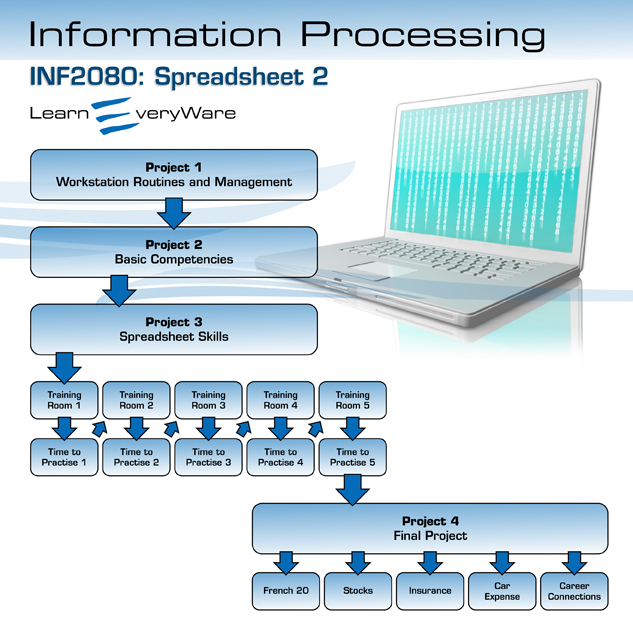

Orientation
Introduction
Welcome to INF2080: Spreadsheet 2 Learn EveryWare!

© Johnny Lye/shutterstock
This is an intermediate level course that will build on your knowledge of spreadsheets and introduce you to more advanced spreadsheet skills. You will review how to establish proper routines and practices that promote safety and security, and you will practise basic competencies or employability skills as you work through the course. You will also examine your personal inventory (or interests and values) and make connections to possible career pathways.
This course is designed using Microsoft® Excel® 2007 on a PC and will provide instructions for this software application. It is important that you have Excel® 2007 on your computer.
Whenever you need Excel help, you can use the Help menu within the software. You can also search the Internet for help. Microsoft Office Online is a rich source of training, demos, podcasts, and webcasts that teaches you how to use the software features. Remember, your teacher is also there to guide you in the right direction.
Included in this course are five training rooms. They provide instruction and allow you to practise the skills needed to successfully complete the course. You are also required to complete a Time to Practise exercise after each of the five training rooms. These exercises allow you to demonstrate the application of the skills learned.
At the end of this course you will be ready to complete your final project, which will assess your skills in creating spreadsheets to solve problems and to present information. Once you successfully complete the final project and your skills assessments, you will earn one credit towards your high school diploma.
Real-world Connections
© digitalife/shutterstock
To be successful in the work world, you need to have hard and soft skills. Hard skills are technical skills related to your job, such as knowing how to create a proper spreadsheet that use formulas and that make you productive and efficient. Soft skills are the basic competencies you will practise throughout this course. Soft skills are what make you a good employee: having a positive attitude and being a creative problem solver, good team member, and skilled communicator. Whether you are interested in a career in business, technology, health sciences, or trades, industries are in need of employees with strong computer skills.
Industry Skills
INF2080: Spreadsheet 2 builds upon your spreadsheet skills and helps prepare you for Microsoft Office Certification in Excel 2007.
You are encouraged to visit the Microsoft website to investigate certification possibilities.

Course Folder

© tastemeru/shutterstock
While working through this course it is important to save all your work as evidence of your learning. Check with your teacher for information regarding where to create your course folder in which to save your assignments.
Watch the demonstration “Creating a Folder on Your Desktop” to see how to create a folder on your desktop.
Icon Legend
This icon alerts you to project work that will be submitted for assessment.
This icon signifies that a scoring rubric is accessible to you to see how you may be scored on a particular assessment piece.
This icon alerts you to a toolkit item.
This icon shows you that an important tip or hint has been provided.
This icon signifies that you are linking to an external document.
This icon refers you to a sample spreadsheet with which to compare your work.
This icon alerts you to a guided search you will need to perform.
This icon shows you that the activity or exercise goes beyond the scope of INF2080. These activities are meant to challenge your knowledge and skills and are not meant for assessment.
Toolkit
Have a question? Need some help? Check out the toolkit!
The INF2080 toolkit is an excellent place to look when you need to see a demonstration of certain features of Excel 2007 and to learn some tips and tricks. A link to the toolkit is available in the menu on the left, so you don't have to navigate back through the course to find the information you need.
Project Descriptions
To become skilled in all of the outcomes for INF2080: Spreadsheet 2, there are four projects to complete. These projects are
- Project 1—Workstation Routines and Management
Learn about health, safety, and security when working on a computer and apply appropriate positions and routines consistently.
- Project 2—Basic Competencies
Demonstrate workplace employability skills.
- Project 3—Spreadsheet Skills
Use training rooms to advance your skills in using spreadsheets to solve problems and present information.
- Project 4—Final Project
Solve simulated real-world problems using spreadsheets. You must also complete a career connection assignment.

© PhotoStocker/shutterstock
Project Skill Level
Expert/Master |
Proficient, |
Competent |
Limited |
No Evidence |
In order to obtain credit from Alberta Education, you must demonstrate all outcomes and obtain a course grade of 50%.
Environmental Impact
Stop before you print!
Can you think of ways of recycling to reduce computer waste?
- paper reduction and recycling
- toner cartridge recycling
- computer equipment recycling
Save power by turning off your hardware when you are finished for the day.